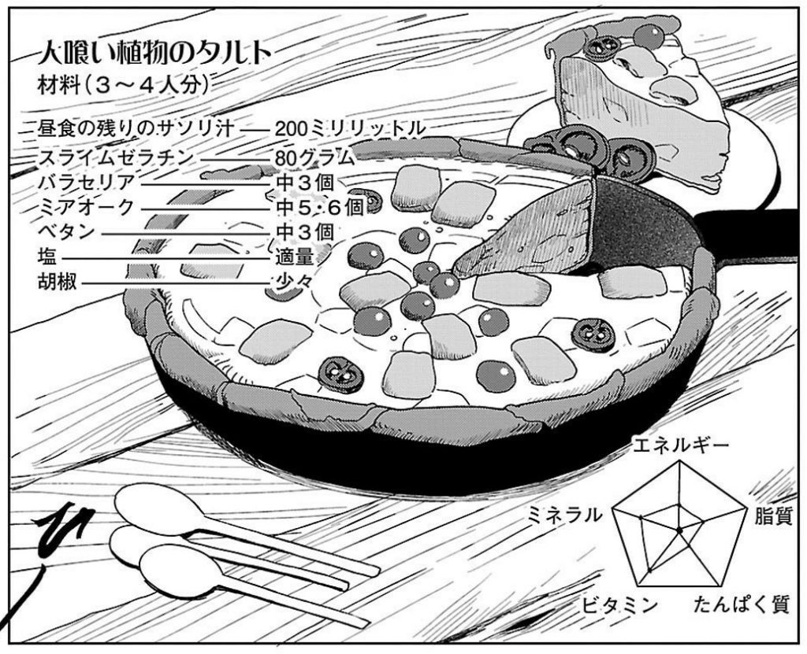

Man-Eating Plant Tart

A tart made with Man-Eating and other plants from the dungeon
Recipe Description
A mixture of mashed up and cut up Man-Eating Plant fruit, slime and scorpion soup is poured into a pan lined with
the flattened peel of the fruit and cooked before garnishing with some more fruit.
Ingredients
- Leftover scorpion broth (200 ml)
- Slime Gelatin (80 grams)
- 3 Baraselia
- 5 or 6 Meeroak
- 3 Betan
- Salt to taste
- A little bit of pepper
Step
- Cut and mash the Man-Eating plant fruit
- Flatten the peel of the fruit to make the shell for the tart
- Pour the scorpion and slime fruit in the Pan
- Add the shell and the main mixture
- Cook the dish and garnish it with more fruit
- Enjoy!